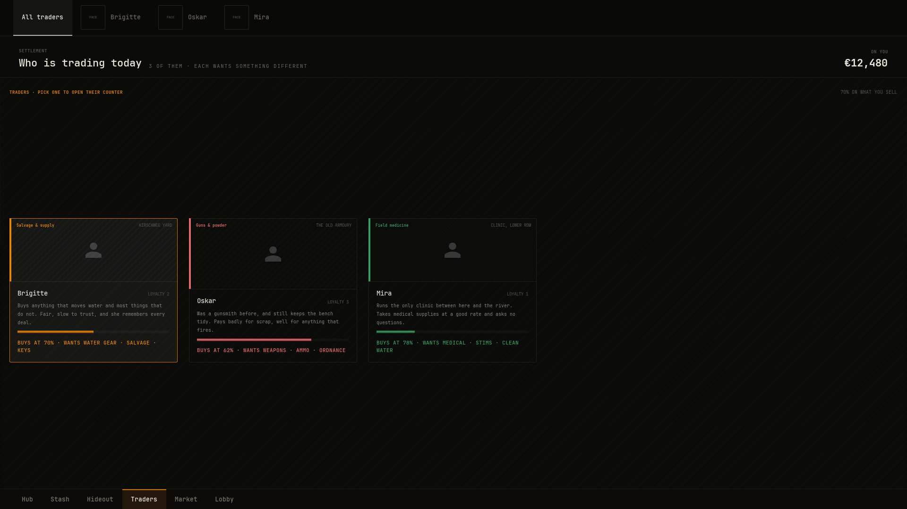
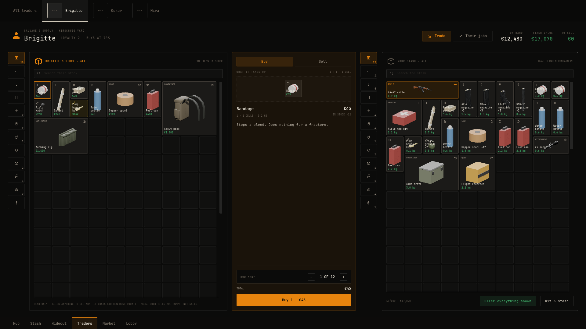
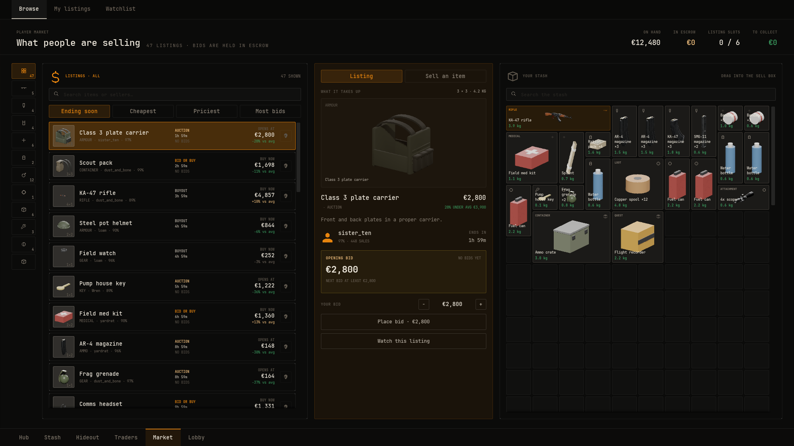

Market and trading
Blackline ships three screens for moving money and goods: the trader roster, the trade screen for one trader, and a player market with auctions. Traders are data assets, and with an Inventory component on the player's pawn, buying, selling, barter and trader jobs work with no request code at all.
Cash#
Every screen that shows or spends money shares one session wallet, NVSViewCash. Buying from a trader, Heal all, station upgrades and wardrobe purchases spend it. Selling to a trader and handing in a task's reward add to it.
The wallet starts from the Wallet.OnHand meter of the wallet source the first time anything asks. The demo sets that figure in data:
- Make the wallet asset Create a data asset of class NVS View Wallet, called
DA_Walletin the demo, and give it a meter with the idWallet.OnHandand a value of 12480. - Plug it in Create a Screen Source Definition with Replaces set to NVS View Wallet and Asset set to
DA_Wallet.
The same wallet also answers Wallet.StashValue, worked out from what the player's stash holds, which the trade screen shows beside the cash.
Money format#
Every price on screen goes through NVSViewMarket::FormatMoney, which reads three fields of your View Setup Definition:
- Currency Symbol
- Defaults to
€. - Symbol After Amount
- Puts the symbol after the number with a space, as in
5,200 kr. - Thousands Separator
- Defaults to a comma.
Write whole amounts. The screens read money as whole units.
Traders are data assets#
Make one Trader Definition per trader. The roster and the trade screen pick it up with no configuration, ordered by Sort Order.
- Display Name, Trade, Location, Blurb
- The name, what they deal in such as Guns & powder, where they are, and a paragraph about them.
- Wants
- What they buy, shown on the card, such as
WEAPONS · AMMO. - Loyalty, Max Loyalty
- The player's standing at the start and the highest it goes. The standing bar fills to Loyalty over Max Loyalty.
- Buy Rate
- The share of an item's value they pay when the player sells, from 0 to 1.
- Accent
- The colour role their card and selection use.
- Shelf
- What they sell. Each entry has an Item, a Stock count, a Price (zero sells at the item's value) and an optional Barter list of items and counts they take instead of money.
The demo's three traders, from make_content.py:
| Trader | Trade | Loyalty | Buy Rate | Barter example |
|---|---|---|---|---|
| Brigitte | Salvage & supply | 2 | 0.7 | Pump house key for 6 copper spools |
| Oskar | Guns & powder | 3 | 0.62 | 4x scope for 2 fuel cans |
| Mira | Field medicine | 1 | 0.78 | Plate carrier for 2 field med kits |

Choosing a card opens the screen set in the roster's Counter Destination, which is the trade screen, showing that trader.
The trade screen#
The trade screen (W_TradeScreen) shows the trader's shelf on the left, a deal column with Buy and Sell tabs in the middle, and the player's stash on the right. A second view lists the trader's jobs.

Category chips#
The chips beside the shelf and the stash are All plus one chip per Item Category Definition, in sort order. A category takes every item whose tags carry its Tag or a tag below it, so a category with Item.Weapon holds Item.Weapon.Rifle. Set Icon on the category to show an icon on its chip instead of its name.
Buying#
The player picks a shelf item, sets a quantity and presses Buy. The screen raises Item.Buy. The player's Inventory component answers it. It charges the shelf price times the quantity from the cash, puts the items in the stash, and refunds any that did not fit. When the cash is short, nothing changes.
A shelf entry with a Barter list is barter only. The deal column shows the terms instead of a quantity, and the button raises Trade.Swap. The inventory checks the player holds every item asked for, takes them, and hands over the item.
Selling#
The player drags items from the stash onto the counter tray. The tray total is each item's value times the trader's Buy Rate. Sell it all raises one Item.Sell per item, carrying that figure as Amount. The inventory removes the item and adds the amount to the cash. Items left on the tray go back to the stash when the screen closes.
Trader jobs#
A Task Definition whose Giver is this trader shows in the jobs view. The action button takes a job that reads ON OFFER and hands in one that reads READY TO HAND IN. Handing in takes the items the task asks for out of the player's inventory, pays the task's Reward Cash once, and the job reads TURNED IN. The task log follows the same state. Tasks and loadouts covers the task fields.
The market#
The market (W_MarketScreen) is a player market with buyouts and auctions. It has three views: browse, the player's own listings, and the watchlist. A detail panel shows a listing's price against the average, the seller, recent bids and the bid controls. A sell box beside the stash lists one item at a time.

Its built-in source, UNVSViewMarketBoard, runs a market offline. It fills the catalogue from every Item Definition with a Value, groups listings by your item categories, and opens a few listings per item under the names in Seller Names, which comes filled with eight names. Empty that list and the board opens with no listings. To change these fields, make a data asset of class NVS View Market Board and plug it in with a Screen Source Definition. Its clock runs in real time from the market's first open this session. Rivals outbid the player after Rival Delay seconds, a fairly priced buyout of the player's sells after Sell After seconds, and the player's auctions take a bid every Bid Every seconds up to Max Bids. When it has no cash of its own it uses the session cash.
It is there to show the market working offline. A game with a real market supplies its own source:
// Interfaces/NVSViewMarketSource.h. The screen asks again every RereadSeconds, 1 by default.
bool DescribeMarket(const FGuid& ContextId, FNVSViewMarket& OutMarket);An FNVSViewMarket holds Listings, the player's MyListings, the Catalogue of every item type with its average price, and the Wallet. The screen re-reads straight after every request it raises, and posts a toast when the player is outbid, gets a bid or sells.
The market's rules#
The wallet inside the market sets the rules, so each game can run its own economy:
- On Hand, Escrow, To Collect
- Cash to spend, money held in bids the player leads, and sale money not yet collected.
- Slots Max
- How many listings the player can run at once. Default 6.
- Listing Fee Rate, Minimum Fee
- The fee to list, as a share of the higher of the buyout and the opening bid, and its floor. Defaults 3 percent and 20.
- Sale Tax Rate
- Taken from the final price when a listing sells. Default 7 percent.
- Minimum Raise Rate
- How much a new bid must beat the top bid by. Default 5 percent.
- Duration Hours
- The listing lengths the sell box offers. Default 12, 24 and 48.
What the market raises#
| Request | When |
|---|---|
Market.Bid | The player bids. Amount is the bid. |
Market.Buy | The player buys a listing outright. |
Market.Watch, Market.Unwatch | The player pins or unpins a listing. |
Market.List | The player lists the sell box item. Draft holds the terms. |
Market.Cancel, Market.Reclaim | The player pulls a live listing with no bids, or takes back an expired one. |
Market.Collect | The player collects a sale, or every sale when there is no subject. |
Market.Deliver, Market.Refund | A listing reads Won. Deliver when the stash has room, Refund when it does not. |
The Inventory component answers the item side. A listed item leaves the stash, and a bought, delivered, cancelled or reclaimed one arrives in it.
Market.Deliver or Market.Refund by itself for every listing that reads Won. If your server settles wins on its own, move a listing out of Won as soon as it is settled, so a win is not settled twice.Answer the requests yourself#
A game with its own economy binds On Request on the local player's NVS View Request Subsystem and handles the request tags it cares about.
- Get the subsystem In your player controller, add Get LocalPlayer Subsystem and pick NVSViewRequestSubsystem.
- Bind the event From it, add Bind Event to On Request and create a custom event with the request as its input.
- Check the tag Break the NVSViewRequest and compare Request Id with tags such as
NVS.View.Request.Item.Buy,NVS.View.Request.Item.SellandNVS.View.Request.Market.Bid. - Change your data Read Subject Id (the trader or listing), Item Id and Amount and call your own logic. Then call Refresh Source for any source of yours that changed.
#include "Subsystems/NVSViewRequestSubsystem.h"
// Declared as UFUNCTION() void HandleViewRequest(const FNVSViewRequest& Request);
void UMyEconomyComponent::HandleViewRequest(const FNVSViewRequest& Request)
{
if (Request.RequestId == NVSViewRequests::ItemBuy())
{
// SubjectId is the trader, ItemId the shelf item and Amount the quantity.
ServerBuyFromTrader(Request.SubjectId, Request.ItemId, static_cast<int32>(Request.Amount));
}
else if (Request.RequestId == NVSViewRequests::MarketBid())
{
ServerPlaceBid(Request.SubjectId, Request.Amount);
}
}Bind it with Requests->OnRequest.AddDynamic(this, &UMyEconomyComponent::HandleViewRequest). The Server functions stand for your own code.
The request tags and their fields are listed in Requests.
Result#
In the demo, open Traders, pick Oskar and buy an AR-4 magazine. The cash in the header drops by its price and the magazine appears in your stash. Drag it back onto the counter and press Sell it all, and the cash rises by its value times 0.62. In the market, a bid you place moves into escrow, and a fairly priced listing of yours sells after a short wait with a toast and a figure to collect.